Further Organic Mechanisms 2
Chapter H3.6 · Further Organic Mechanisms Part 2
On this page
Introduction
In Topic 11.5, 2-bromopropane heated with NaOH in ethanol gave propene, and 2-bromobutane gave three alkenes: but-1-ene and cis- and trans-but-2-ene. The mechanism, and the reasons for the mixture, were left for later. This Part fills the gap:
- the two mechanisms of elimination, E2 and E1, with their energy profiles and rate laws;
- why E2 needs one particular conformation (anti-periplanar, built on the Newman projections of H3.5 Part 1), and what that means for the E or Z alkene;
- which alkene forms when there is a choice (Zaitsev and Hofmann products);
- how elimination competes with substitution (E2 against SN2).
Key terms
These terms are added to those of Part 1.
| Term | Meaning |
|---|---|
| Elimination | A reaction in which a small molecule (here H+ and X−, as HX) is removed from neighbouring carbon atoms and a C=C bond forms. |
| α carbon, β carbon, β-hydrogen | The α carbon carries the leaving group; a β carbon is a carbon next to it; a β-hydrogen is an H atom on a β carbon. |
| E1, E2 | Elimination, unimolecular (one species in the rate-determining step) and bimolecular (two species). |
| Anti-periplanar | H–C–C–X dihedral angle θ = 180°: all four atoms in one plane, H and X on opposite sides (the anti conformation of H3.5 Part 1). |
| Syn-periplanar | θ = 0°: H and X in one plane on the same side (eclipsed). |
| Anti-elimination, syn-elimination | Elimination of H and X from an anti-periplanar or a syn-periplanar arrangement. |
| Stereoselective | One stereoisomer of the product forms in preference when two could form. |
| Stereospecific | The stereochemistry of the starting material decides which stereoisomer of product forms: different stereoisomers of reactant give different stereoisomers of product. |
| Regioselective | One of two possible positions of the new bond is preferred. |
| Zaitsev product | The more substituted, more stable alkene. 9813 calls it the thermodynamic product. |
| Hofmann product | The less substituted alkene, favoured by a bulky base. 9813 calls it the kinetic product. |
| Bulky base | A strong base too crowded to attack carbon easily, e.g. the tert-butoxide ion, (CH3)3CO−. |
Elimination: what is removed and from where
In every elimination from a halogenoalkane, the base removes a β-hydrogen as H+, the leaving group leaves from the α carbon, and a C=C bond forms between the α and β carbons. So to find the possible alkenes, count the different β carbons that carry H atoms:
- 2-bromopropane, CH3CHBrCH3: two β carbons, but they are equivalent, so there is one alkene, propene;
- 2-bromobutane, CH3CHBrCH2CH3: two different β carbons, C1 and C3, so two positions for the C=C, and three alkenes (but-1-ene and the E and Z isomers of but-2-ene);
- bromomethane and 1-bromo-2,2-dimethylpropane have no β-hydrogen, so they cannot eliminate at all.
The E2 mechanism
2-Bromopropane with ethoxide ions (sodium ethoxide, NaOC2H5, a strong, small base; NaOC2H5 in ethanol, heat) gives propene in one step (Fig 13). Three curly arrows move together:
- from a lone pair on the O of the ethoxide ion to a β-H;
- from that C–H bond into the region between the two carbons, forming the π bond;
- from the C–Br bond to the Br.
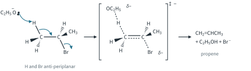
In the transition state the O···H, H···C and C···Br bonds are all partial, the C=C is partly formed, and the negative charge is shared between O and Br. Notice that the H and the Br are drawn on opposite sides, in one plane: section 6 explains why.
Both the halogenoalkane and the base are in the only step, so
rate = k[RBr][B−]
E2 is bimolecular, second order overall, concerted (one step), with no intermediate: just like SN2, except that the base attacks an H instead of the carbon.
The E1 mechanism
2-Bromo-2-methylpropane warmed in ethanol alone (no added base) gives some 2-methylpropene by a two-step route (Fig 14). Step 1 is the same slow ionisation as in SN1. In step 2 (fast) a lone pair on the O of an ethanol molecule, a weak base, takes a β-H from the carbocation, and the electrons of the C–H bond form the π bond.
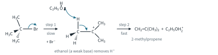
Only the halogenoalkane is in the slow step, so
rate = k[RBr]
E1 is unimolecular, like SN1, and the Hammond postulate applies in the same way: the ionisation step is uphill, its transition state is late and carbocation-like, so carbocation stability sets the rate. E1 is important for tertiary substrates, sometimes for secondary ones, and never for primary ones.1
SN1 and E1 share step 1, so they always come together: the carbocation either gains a nucleophile (SN1) or loses H+ (E1). With ethanol, 2-bromo-2-methylpropane gives 2-ethoxy-2-methylpropane (SN1) and 2-methylpropene (E1). Heating shifts the mixture towards E1 (section 10).
Regioselectivity and stereochemistry of E1. E1 goes through the carbocation, and a weak base (water, ethanol) removes H+ in the fast step. The more stable, more substituted alkene (the Zaitsev product, section 8) is the main product, and there is no Hofmann option because no bulky strong base is involved. Because the carbocation is planar, the H can come off any β carbon in any conformation: E1 is not stereospecific; where an E/Z pair is possible it usually gives more of the more stable E isomer.
Further example: the dehydration of a tertiary alcohol is E1. In Topic 11.6 Part 1, alcohols were dehydrated with conc. H3PO4 catalyst, heat. For 2-methylpropan-2-ol the mechanism is E1, in three steps:
- the O takes H+ from the acid (fast, reversible): (CH3)3COH + H+ ⇌ (CH3)3COH2+;
- H2O leaves (slow), giving (CH3)3C+;
- H2O (or H2PO4−) removes H+ from a CH3 group, giving 2-methylpropene, and H+ is regenerated (a catalyst).
All nine β-H atoms are equivalent, so there is only one alkene here.
Fig 15 compares the two energy profiles.
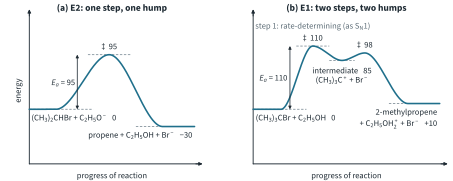
Worked example 1: E1 or E2 from rate data
2-Bromo-2-methylpropane was studied at 25 °C (illustrative data): set A in ethanol only; set B in ethanol containing sodium ethoxide. Deduce each rate equation, calculate k, and say which mechanism gives the alkene in each set.
| Set | [(CH3)3CBr] / mol dm−3 | [C2H5O−] / mol dm−3 | initial rate / mol dm−3 s−1 |
|---|---|---|---|
| A | 0.010 | 0 | 4.0 × 10−8 |
| A | 0.020 | 0 | 8.0 × 10−8 |
| B | 0.010 | 0.50 | 2.0 × 10−6 |
| B | 0.010 | 1.00 | 4.0 × 10−6 |
| B | 0.020 | 1.00 | 8.0 × 10−6 |
(To answer, look first at whether the base appears in the rate equation.) In set A, doubling [(CH3)3CBr] doubles the rate: rate = k[(CH3)3CBr], with
k = 4.0 × 10−8 / 0.010 = 4.0 × 10−6 s−1
There is no strong base, so the carbocation route runs: the products are 2-ethoxy-2-methylpropane (SN1, ethanol attacks the carbocation) and 2-methylpropene (E1, ethanol removes H+). Both share step 1.
In set B, doubling [C2H5O−] doubles the rate, and doubling [(CH3)3CBr] doubles it too: rate = k[(CH3)3CBr][C2H5O−], second order overall: E2.
k = 2.0 × 10−6 / (0.010 × 0.50) = 4.0 × 10−4 mol−1 dm3 s−1
The product is almost only 2-methylpropene. The carbocation route is still there, but at [(CH3)3CBr] = 0.010 mol dm−3 it goes at only 4.0 × 10−8 mol dm−3 s−1, which is (4.0 × 10−8 / 4.0 × 10−6) × 100 = 1.0 % of the rate measured with 1.00 mol dm−3 ethoxide: too small to see in the data. SN2 is impossible for this tertiary substrate.
Anti- and syn-elimination
In the E2 transition state the C–H bond and the C–Br bond turn into the two p orbitals of the new π bond. For these two p orbitals to overlap, they must be parallel, and that is only possible when H, Cβ, Cα and Br lie in one plane. There are two ways to do that (Fig 16):
- anti-periplanar: θ(H–C–C–Br) = 180°, H and Br on opposite sides, in a staggered conformation;
- syn-periplanar: θ = 0°, H directly behind Br, in an eclipsed conformation.
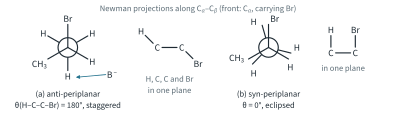
Why E2 prefers anti:
- the anti-periplanar arrangement is a staggered conformation, lower in energy than the eclipsed syn one (H3.5 Part 1);
- anti lets the electrons of the C–H bond push the Br out from the back, like the back-side attack of SN2;
- the base and the leaving group are far apart, on opposite sides of the molecule.
Stereoselective and stereospecific eliminations
Worked example 2: a stereoselective E2
2-Bromobutane with NaOC2H5 in ethanol, heat, gives about 20 % but-1-ene (H removed from C1) and about 80 % but-2-ene (H from C3) (literature values, rounded), and the but-2-ene is mostly the E isomer. Explain the E preference.
(To answer, draw the Newman projections along C2–C3 with the Br and an H on C3 anti.) C3 carries two H atoms, so there are two different anti-periplanar conformations (Fig 17). In (a) the two CH3 groups are anti (θ(C1–C2–C3–C4) ≈ 180°); in (b) they are gauche (about 60°). Remove the anti H and the Br and let the other groups fall into the plane of the C=C: (a) gives (E)-but-2-ene, (b) gives (Z)-but-2-ene.
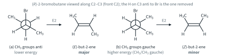
Conformation (a) has no CH3/CH3 gauche interaction (H3.5 Part 1), so it is lower in energy, and it leads to the more stable alkene. So more molecules react through (a), and (E)-but-2-ene is the major but-2-ene. Both but-2-enes form from the same starting material, one in preference: the reaction is stereoselective. The same is true whichever enantiomer of 2-bromobutane is used.
Worked example 3: a stereospecific E2
2-Bromo-3-methylpentane, CH3CHBrCH(CH3)CH2CH3, has two chiral centres, C2 and C3, so it has four stereoisomers: two pairs of enantiomers. With NaOC2H5 in ethanol, heat, the main product is 3-methylpent-2-ene, CH3CH=C(CH3)CH2CH3, the trisubstituted alkene from removing the H on C3. Predict whether (2R,3S)- and (2R,3R)-2-bromo-3-methylpentane give the E or the Z alkene.
(To answer, draw the Newman projection with Br and the H anti first, then read off which groups are gauche.) C3 carries only one H, so each diastereomer has only one anti-periplanar conformation for this elimination (Fig 18). In (2R,3S) the CH3 on C2 (C1) is gauche to the C2H5 on C3, so they end up cis; in (2R,3R) they are anti, so they end up trans.
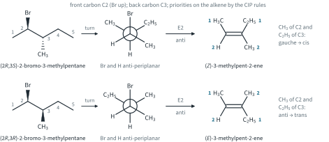
Now name the alkenes with the CIP rules (H3.5 Part 2). On C2 of the alkene, CH3 > H; on C3, C2H5 > CH3. So with CH3 (of C2) and C2H5 cis, the alkene is (Z)-3-methylpent-2-ene, and with them trans it is (E)-3-methylpent-2-ene. cis and trans cannot name this alkene: it is trisubstituted, with three groups other than H on the C=C.
Each diastereomer gives one alkene only, and different diastereomers give different alkenes: the reaction is stereospecific. The enantiomers (2S,3R) and (2S,3S) give the same alkenes as their mirror images, (Z) and (E) respectively, because the alkene has no chiral centre and is its own mirror image. A little 3-methylpent-1-ene (H removed from C1) also forms; it is not stereo-relevant here.
How do we know that E2 is anti? Suppose (2R,3S)-2-bromo-3-methylpentane eliminated syn instead, from the eclipsed conformation with H behind Br (Fig 19). The groups that would end up cis are different, and the product would be the E alkene. The Z alkene is found, so the elimination is anti. Experiments of this kind proved the anti preference.
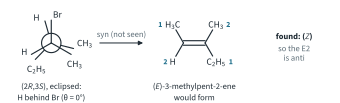
E1, by contrast, is not stereospecific: the planar carbocation forgets the configuration of the starting material.
Further example: E2 in cyclohexane rings
In a cyclohexane chair (H3.5 Part 1), axial bonds on neighbouring carbons point in opposite directions, one up and one down, so they are anti-periplanar. An equatorial bond is not anti-periplanar to any bond on the next ring carbon. So in a ring, E2 needs the H and the leaving group both axial (trans-diaxial) (Fig 20).
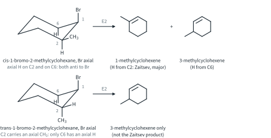
- cis-1-Bromo-2-methylcyclohexane: in the chair with Br axial, the CH3 is equatorial, so the H on C2 is axial. H atoms on C2 and on C6 are anti to Br, and the main product is the more substituted 1-methylcyclohexene (Zaitsev), with some 3-methylcyclohexene.
- trans-1-Bromo-2-methylcyclohexane: Br is axial only in the chair in which the CH3 is axial too, so the H on C2 is equatorial. Only the H on C6 can be anti, so the product is 3-methylcyclohexene only, not the Zaitsev product. The reaction is also slower, because the diaxial chair is the minor one.
Zaitsev and Hofmann products
When there are two kinds of β-hydrogen, two alkenes can form. Which one is favoured depends on the alkenes' stabilities and on the base.
Alkene stability
The less energy released when an alkene is hydrogenated to the alkane, the more stable the alkene. Fig 21 shows enthalpy changes of hydrogenation (literature values, rounded).
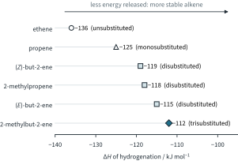
More carbon groups on the two C=C carbons make a more stable alkene:3
tetrasubstituted > trisubstituted > disubstituted > monosubstituted
The reasons are the ones that stabilise carbocations (Part 1): hyperconjugation of the C–H bonds of the alkyl groups with the π system, and the inductive effect. Among disubstituted alkenes, the E (trans) isomer is more stable than the Z (cis) isomer, because its two CH3 groups are apart. Tetrasubstituted alkenes, with four alkyl groups on the C=C, are more stable still.
Worked example 4: Zaitsev and Hofmann
2-Bromo-2-methylbutane, (CH3)2CBrCH2CH3, gives 2-methylbut-2-ene, (CH3)2C=CHCH3, and 2-methylbut-1-ene, CH2=C(CH3)CH2CH3. With NaOC2H5 in ethanol, heat, the ratio is about 70 : 30; with potassium tert-butoxide, KOC(CH3)3, in (CH3)3COH, heat, it is about 28 : 72 (literature values, rounded). Explain both results.
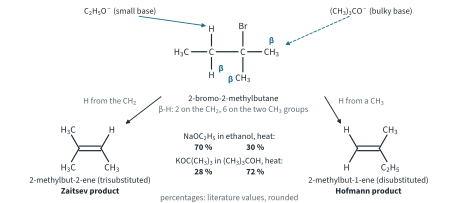
(To answer, find the β-hydrogens first.) There are two kinds (Fig 22): 6 H on the two CH3 groups on C2, whose removal gives 2-methylbut-1-ene (disubstituted, the Hofmann product), and 2 H on the CH2, whose removal gives 2-methylbut-2-ene (trisubstituted, the Zaitsev product). Neither alkene has E/Z isomers.
- Small base (C2H5O−): the E2 transition state already has partial C=C character, so by the Hammond postulate it is lowered by whatever stabilises the alkene. The path to the more stable trisubstituted alkene has the lower transition state, and the Zaitsev product is the main one, 70 %.
- Bulky base ((CH3)3CO−): it cannot easily reach the H atoms on the CH2, which are hemmed in by the CH3 and C2H5 groups on the next carbon. The H atoms of the CH3 groups are on the outside, and there are more of them (6 against 2), so the less substituted alkene forms faster: Hofmann, 72 %.
The same idea applies to 2-bromobutane: with a small base it gives about 80 % but-2-ene (Zaitsev) and 20 % but-1-ene (literature values, rounded). Fig 23 shows the two transition states for each base.
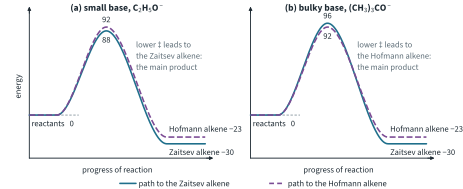
9813 calls the Zaitsev product the thermodynamic product (it is the more stable alkene) and the Hofmann product the kinetic product (with a bulky base it is the one formed faster).4
E1 against E2
The two elimination mechanisms side by side:
| E2 | E1 | |
|---|---|---|
| Steps | one (concerted) | two: ionisation (slow), then loss of H+ (fast) |
| Rate equation | rate = k[RX][B−] | rate = k[RX] |
| Molecularity | bimolecular | unimolecular |
| Energy profile | one hump | two humps, the first higher |
| Intermediate | none | a carbocation |
| Base needed | strong (C2H5O−, OH−, (CH3)3CO−) | weak is enough (H2O, an alcohol) |
| Substrate | any with a β-H; tertiary and secondary with a strong base | tertiary; secondary with a weak base |
| Stereochemistry | anti-elimination; stereospecific | not stereospecific; usually more E |
| Regioselectivity | Zaitsev with a small base, Hofmann with a bulky base | Zaitsev |
| Competing substitution | SN2 | SN1 (same carbocation) |
E2 against SN2: substrate and base effects
A species with a lone pair can attack a carbon (substitution) or an H (elimination). Which wins depends on the substrate and on the base.
Substrate effects.
- Methyl: no β-H, so SN2 only.
- Primary: SN2, unless the base is bulky (then E2).
- Secondary: with a strong base, mainly E2; with a good nucleophile that is a weak base, SN2.
- Tertiary: SN2 is impossible; E2 with any strong base.
Base effects.
- Strength: a strong base favours E2 over SN2; weak bases that are good nucleophiles (CN−, I−) favour SN2.
- Size: a bulky base cannot reach the carbon but can reach an H on the outside of the molecule, so it gives E2, often the Hofmann alkene.
Temperature. Heat favours elimination. Elimination turns two particles into three (for example, C3H7Br + C2H5O− → C3H6 + C2H5OH + Br−), so ΔS is more positive than for substitution, and the −TΔS term (Topic 7) makes ΔG more negative as T rises. Elimination also usually has the higher Ea, so its rate rises more with temperature.
SN1 and E1. A tertiary halogenoalkane in water or ethanol, with no strong base, reacts through the carbocation by both SN1 and E1. The result is a mixture, with more alkene the hotter the reaction.
The table below (Table 1) brings all of this together. The main mechanism in each cell is in bold. Methyl and primary: SN2 unless the base is bulky; secondary: depends on the reagent (good nucleophile and weak base: SN2; strong base: E2; weak nucleophile: slow SN1/E1); tertiary: never SN2; strong base: E2; otherwise SN1 + E1. For 2-methylpropene and 2-methylpropan-2-ol no Zaitsev or Hofmann choice arises, because all the β-H atoms are equivalent.
Table 1. Predicting the main mechanism from the substrate and the reagent.
| Substrate | weak nucleophile, weak base: H2O, warm | good nucleophile, weak base: CN− (KCN in ethanol, heat) or I− | strong, small base: NaOC2H5 in ethanol, heat (or NaOH in ethanol, heat) | strong, bulky base: KOC(CH3)3 in (CH3)3COH, heat |
|---|---|---|---|---|
| methyl: bromomethane CH3Br | very slow SN2 (methanol); no SN1 | SN2 (ethanenitrile CH3CN) | SN2 (methoxyethane CH3OC2H5); no elimination (no β-H) | SN2, slow (2-methoxy-2-methylpropane); no elimination (no β-H) |
| primary: bromoethane CH3CH2Br | very slow SN2 (ethanol); no SN1 (primary carbocation too unstable) | SN2 (propanenitrile) | mainly SN2 (ethoxyethane), a little E2 (ethene) | mainly E2 (ethene), some SN2 |
| secondary: 2-bromopropane (CH3)2CHBr | slow; SN1 with a little E1 (propan-2-ol, some propene) | mainly SN2 (2-methylpropanenitrile), a little E2 | mainly E2 (propene), some SN2 (2-ethoxypropane) | E2 (propene) |
| tertiary: 2-bromo-2-methylpropane (CH3)3CBr | SN1 + E1 (2-methylpropan-2-ol, some 2-methylpropene); no SN2 | no SN2; SN1 and E1 (a mixture) | E2 (2-methylpropene); no SN2 | E2 (2-methylpropene) |
| Further example: 1-bromo-2,2-dimethylpropane (CH3)3CCH2Br | no reaction in practice | SN2 extremely slow | SN2 extremely slow; no E2 (no β-H) | no reaction in practice |
Worked example 5: predicting the mechanism
Predict the main product and mechanism, with the rate equation, for: (a) bromoethane with NaOC2H5 in ethanol, heat; (b) bromoethane with KOC(CH3)3 in (CH3)3COH, heat; (c) 2-bromopropane with NaOC2H5 in ethanol, heat; (d) 2-bromo-2-methylpropane with H2O, warm.
(To answer, class the substrate, then the reagent, then read the grid.)
- Primary substrate, strong but small base, good nucleophile: mainly ethoxyethane by SN2, a little ethene (E2). rate = k[CH3CH2Br][C2H5O−].
- Primary substrate, bulky base: mainly ethene by E2. rate = k[CH3CH2Br][(CH3)3CO−].
- Secondary substrate, strong base: mainly propene by E2, some 2-ethoxypropane (SN2). rate = k[(CH3)2CHBr][C2H5O−].
- Tertiary substrate, weak nucleophile and weak base: 2-methylpropan-2-ol by SN1 and some 2-methylpropene by E1; warmer gives more alkene. rate = k[(CH3)3CBr].
Summary
The four mechanisms:
| Mechanism | Rate equation | Stereochemistry | Regiochemistry or substrate |
|---|---|---|---|
| SN2 | rate = k[RX][Nu−] | inversion | methyl > 1° > 2° |
| SN1 | rate = k[RX] | racemisation (a little extra inversion) | 3° > 2°; benzyl, allyl |
| E2 | rate = k[RX][B−] | anti-elimination: stereospecific; stereoselective (more E) | Zaitsev (small base); Hofmann (bulky base) |
| E1 | rate = k[RX] | not stereospecific | Zaitsev |
Additional information
- Beyond the syllabus: there is a third route, E1cB, in which the base removes H+ first to give a carbanion, and the leaving group goes afterwards. It needs an acidic H, for example next to a C=O group. It is not in 9813. ↩
- Beyond the syllabus: some syn-eliminations, such as the heating of certain esters, follow quite different routes. They are not in 9813. ↩
- The fair comparison is between isomers that give the same alkane. (Z)- and (E)-but-2-ene both give butane, and the E isomer is more stable by about 4 kJ mol−1 (−119 against −115 kJ mol−1). ↩
- Strictly, in E2 both alkenes are formed under kinetic control: they do not interconvert. "Thermodynamic" labels the Zaitsev product as the more stable one; "kinetic" labels the Hofmann product as the one formed faster with a bulky base. ↩